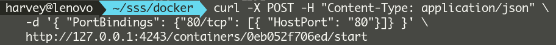
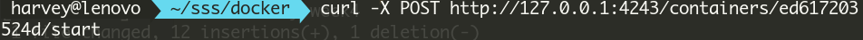

Docker Study
스터디 구성원 모집이 마감되었습니다.(2016.10.07 11:00PM)
스터디 개요
- 기간 : 2016년 10월 12일 부터 약 5~7주
- 스터디 리더 : 한영빈(소프16)
- 스터디 방식 : 커리큘럼에 따라 각자 미리 공부해 와서, 질문과 답변 주고받기
- 교재 : 가장 빨리 만나는 Docker(원고 온라인상에 공개되어 있음), Docker Docs의 일부 문서
- 구성원 : 한영빈(소프16), 김준수(소프11), 추건우(소프15), 배다슬(소프12, 고정 참석자 아님)
- 스터디 모임 시각 : 수요일 오후 7시 30분 ~ 오후 9시 30분
- 모임 장소 : 스스스 랩실
계획중인 스터디 커리큘럼
- 1주차 : 1~5장
- 2주차 : 6~7장
- 3주차 : 8~9장
- 4주차 : 10~14장
- 5주차 : 16~19장 + Docker Swarm
1주차 모임
- 2016.10.12
- 진도 : 1~5장
- 참석자 : 한영빈, 김준수, 추건우, 배다슬
- 도커 설치 : 책의 내용은 오래 되어 안 될 수도 있으므로, 도커 공식 문서 참조 권장.
- https://www.docker.com/products/overview
- 우분투에 설치 하려는 경우 다음 문서를 참조.
- https://docs.docker.com/engine/installation/linux/ubuntulinux/
- Docker run reference
docker run [image] /bin/bash의 옵션으로-it를 입력하지 않는 경우는 어떻게 될까?-i옵션은 interactive로 입력과 출력을 할 수 있게 해준다. 시각적으로는 보이나 shell의id@domain$부분이 나타나지 않는다.-t옵션은 tty로 shell의id@domain$부분이 시각적으로 보인다. 그러나 입출력이 불가능 하다.- 그러므로 shell을
run하는 경우에는-it옵션을 줘야 정상적으로 사용할 수 있다.
- 컨테이너를 백그라운드 모드로 돌리려면,
docker run으로 새 컨테이너를 만들 때-d옵션 사용 - 컨테이너의 포트와 호스트의 포트를 연결 하려면,
-p옵션을 사용한다.- 예시 : 호스트의 80번포트와, 컨테이너의 3000번 포트를 연결
docker run -p 80:3000 <image>:<tag>
- Docker Hub 이외의 Registry 에서 이미지 가져오기.
- 이미지를
pull할 때, 이미지 이름 앞에 해당 registry의 도메인을 붙임.- 예시 :
quay.io에서letsencrypt이미지를 가져오려는 경우. docker pull quay.io/letsencrypt/letsencrypt:latest- 인증이 필요한 경우, 해당 registry 에 로그인 하면 됨.
- 예시 : GitLab Container Registry 에 로그인.
docker login registry.gitlab.com
- 예시 :
- 이미지를
gitlab의 registry에서 이미지를 가져오는 방법
docker login registry.gitlab.com명령을 통해 gitlab의 registry에 로그인을 한다.docker pull registry.gitlab.com/<user>/<repo>:<name>명령을 통해 등록된 registry를 당겨올 수 있다.
추건우 공부 내용 링크 :https://drive.google.com/open?id=1e9U65MQRzANiSjWH1OzNx0bpe4jqX4NNXPy9BhhQb04
- Docker 에서 관리하는 설정, 이미지, 컨테이너 등은
/var/lib/docker에 보관됨
2주차 모임
- 2016.11.02
- 진도 : 6~7장
- 참석자 : 한영빈, 김준수
- 결석 : 추건우, 배다슬
- 도커 개인저장소 구축
- 서버로 사용할 컴퓨터에 registry를 받아두고 클라이언트에서 daemon실행할 때 아래 명령을 통해서 실행해준다.
sudo docker daemon --insecure-registry=<ip_address:port_number>- systemd 사용자의 경우 daemon을 항상 이런식으로 실행할 경우는 다음 문서를 참고
- http://www.developmentalmadness.com/2016/03/09/docker-configure-insecure-registry-for-systemd/
- insecure-registry를 설정해주는경우에는 http 통신이 가능하지만 권장되지는 않는다. 인증서를 가지고 https 통신을 하도록 하자.
- 볼륨 지정 시 해당 위치 찾기
- 해당 container에 볼륨지정
docker run -v /data <image_name>- 호스트의 볼륨 위치
docker inspect -f "{{range .Mounts}}{{.Source}}{{end}}" <image_name>
- archlinux 기준으로
/var/lib/docker/volumes/<image_id>/_data에 위치함 docker inspect포맷 관련 자료Dockerfile에서CMD는 한번만 사용 가능.- 여러번 사용할 경우, 가장 마지막에 나와있는
CMD부분의 명령이 실행됨. - 만약, A 라는 도커 이미지를 베이스로 도커 이미지를 만들었을 때, A 와 본인이 A 를 기반으로 만든 이미지 B 둘 다에,
CMD가 있는 경우, A 를 기반으로 하는 B 의CMD로 덮어씌워짐. - B 에
CMD가 없고, A 에 있으면, A 에 있는 것으로 실행됨.
- 여러번 사용할 경우, 가장 마지막에 나와있는
3주차 모임
- 2016.11.09
- 진도 : 8~9장
- 참석자 : 한영빈, 김준수
추건우(탈주!)
- docker 와 git으로 어플리케이션 자동 배포하고 모니터링하기
서버의 git repo를 외부에서 push 할 수 있게 하는 경우 git repo에서 아래 명령을 입력한다.
$ git config receive.denyCurrentBranch ignore만약 특정 repo가 아닌 서버 전체 적용하기 위해서는 config 뒤에
--global을 붙여서 명령을 실행한다.사용자를 docker 그룹에 추가해서
sudo없이 사용하려는 경우그룹이 없는 경우없으면 정상적으로 등록되지 않는다.$ sudo groupadd docker $ sudo gpasswd -a ${USER} docker- 이렇게 진행하면 그룹을 생성하고 사용자를 추가한다.
- 모니터링 서버와 모니터링 되는 서버가 같은 호스트여도 동작한다.(하지만 데이터 수집에 오랜시간이 걸려서 확인하긴 힘들었음)
4주차 모임
- 2016.11.16
- 진도 : 10~14장
- 참석자 : 한영빈, 김준수, 추건우
dockerhub와 docker remote api 사용해보기
docker api의 경우 버전별로 변화하는 점이 많아서 공식문서나 해당 client library의 문서를 참고하는게 좋다.
curl를 사용해서 json 형식으로 docker daemon에 POST요청을 보내는 경우 shell에서 직접입력하지 않고 아래와 같이 파일로 보낼 수 있다.
curl -X POST -H "Content-Type: application/json" -d @test1.json http://127.0.0.1:4243/containers/create-d옵션과 파일명 앞에@을 붙여test1.json파일을 뒤의 주소로 보낸다. - API로 요청하는경우
/containers/<id>/start시 설정값을 넘겨주면 문제가 생긴다. create 할때 값을 입력해줘야 하는 것 같다.  - start는 간단히 이렇게 할 수 있다.
- Docker Remote API Client Library 를 사용하면, 리모트 API 를 사용하여 프로그램 작성시 더 쉽게 작성 가능함.
- 다양한 언어별 라이브러리가 있음. 자세한 사항은 아래 링크 참조
- https://docs.docker.com/engine/reference/api/remote_api_client_libraries/
5주차 모임
- 2016.11.16
- 진도 : 16~19장 + Docker Swarm
- 참석자 : 한영빈, 김준수
Docker Swarm 사용하기
Docker Swarm 은 컨테이너를 더 쉽고 효율적으로 관리할 수 있게 해 주는 도구이다. 흔히 이런 것들을 컨테이너 오케스트레이션이라고 부른다. 대부분의 컨테이너 오케스트레이션은 쉬운 클러스터링이나(혹은 다중 호스트 추상화) 간편한 서비스 생성 및 관리와 업데이트, 셀프 힐링(프로세스 죽었을 때 자동으로 다시 시작) 등의 유용한 기능들을 제공한다. Docker Swarm 또한 마찬가지로 이러한 기능들을 제공하는데, Docker Swarm 의 경우 Docker 1.12.0 부터 Docker Engine 에 Swarm Mode 로 포함이 되어서, 별도로 설치할 것 없이 빠르게 시작 할 수 있다.
- 개방할 포트 - Docker Swarm 으로 클러스터링을 하려면 아래와 같은 포트를 개방해야 함
- 사설망 내부의 호스트끼리는 따로 포트 개방 하지 않아도 보통 가능함.
- TCP 포트 2377 - 클러스터 관리 통신에 사용
- TCP 와 UDP 포트 7946 - 노드 사이 통신에 사용
- TCP 와 UDP 포트 4789 - 오버레이 네트워크 트레픽을 위한 포트
다음 명령줄로 Swarm Mode 를 초기화한다. 초기화된 호스트는 swarm 네트워크에서 리더가 된다.
docker swarm init
호스트에 둘 이상의 IP 가 있는 경우, IP 를 다음과 같이 지정해 줘야 한다. 그래야 노드(리더의 하위 호스트) 가 될 호스트에서 리더를 찾을 수 있다.
docker swarm init --advertise-addr <IP 주소>
swarm 을 초기화하면, 아래와 같은 명령어가 결과로 찍힌다. 이 명령어를 swarm 네트워크에 노드로 넣을 호스트에서 실행하면, swarm 네트워크에 노드로 추가된다.
docker swarm join \
--token SWMTKN-1-3pd5k9k8ydlq41ep6yrfd7kw3567zxg1tqxjt8w75tk5jzaszm-dafqo8ye39otwe19togsixgbc \
192.168.0.39:
swarm 네트워크의 호스트 목록을 확인하려면, 아래 명령줄을 실행한다.
docker node ls
service 를 이용하면, docker swarm 에서 자동으로 컨테이너를 리더 또는 노드에 분배해 주고, 로드 밸런싱 까지 해 준다. 셀프 힐링도 해 준다. 한번 해 보자.
다음과 같은 명령줄로 서비스를 생성한다. 명령줄에 대한 상세 사항은 여기 를 참고하자.
docker service create --name <서비스 이름> <도커 이미지 이름>
다음과 같은 명령줄로 서비스 설정을 업데이트 할 수 있다. 단순히 하나의 컨테이너를 올렸을때, 컨테이너에 대한 업데이트 기능이 없어, 컨테이너를 부수고 다시 만드는 것과는 다르다. 명령줄에 대한 자세한 사항은 여기 를 참고하자
docker service update --image <새 도커 이미지 이름> <업데이트 할 서비스 이름>
서비스를 스케일링 할 수도 있다. 스케일링 하면, 스케일 숫자에 따라 컨테이너가 늘어나고 줄어들며, 내장된 로드벨런서가 로드벨런싱 해 준다.
docker service scale <서비스 이름>=<스케일> nginx=3
서비스를 지우려면, 아래와 같은 명령줄을 이용한다
docker service rm <서비스 이름>
swarm 네트워크에서 떠나려면, 다음을 실행한다.
docker swarm leave
리더의 경우, --force 옵션을 줘야 한다.
docker swarm leave --force